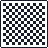
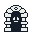

Hi, I'm Iker Delgado Rus, a software developer who works on everything from websites to mobile and desktop applications.
As a developer, I love the programming side of software development, where I can make the most of my skills in languages such as Java, JavaScript, and C#. Beyond programming, I also enjoy exploring other areas of development, such as 2D and 3D design.

About:
This is a small project to understand how use Unity and how it works.
Tools used:
Unity
Development time:
02/10/2026 to 23/10/26
About:
This is a small project to understand how use Unity and how it works.
Tools used:
Unity
Development time:
02/10/2026 to 23/10/26